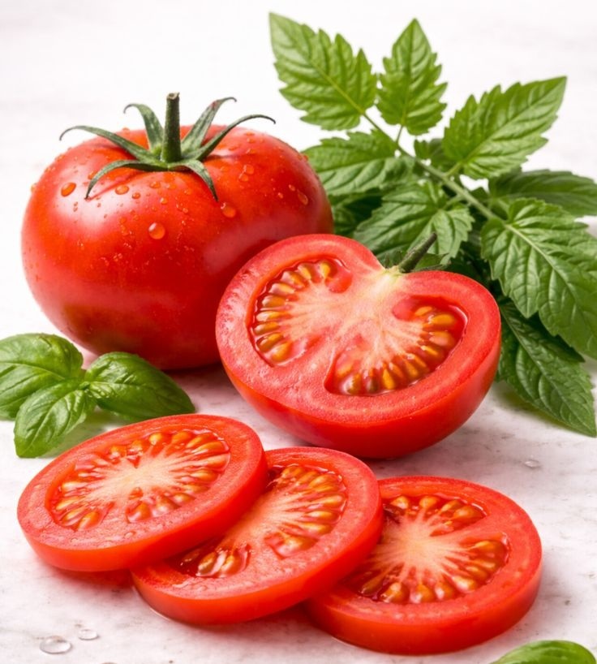
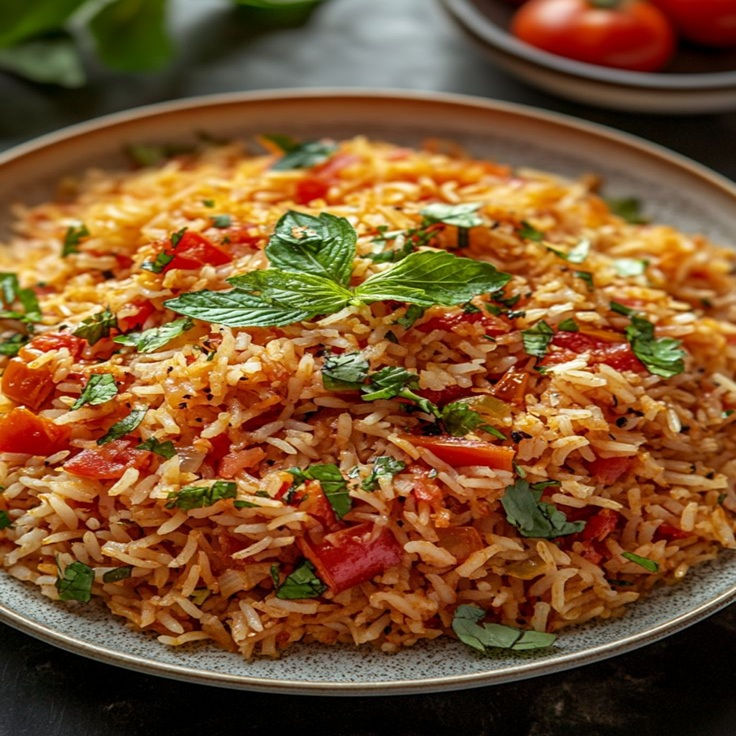
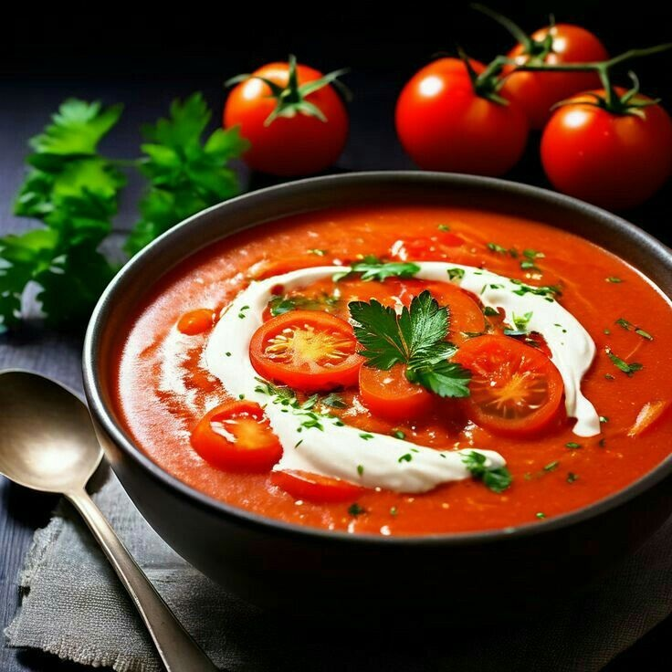
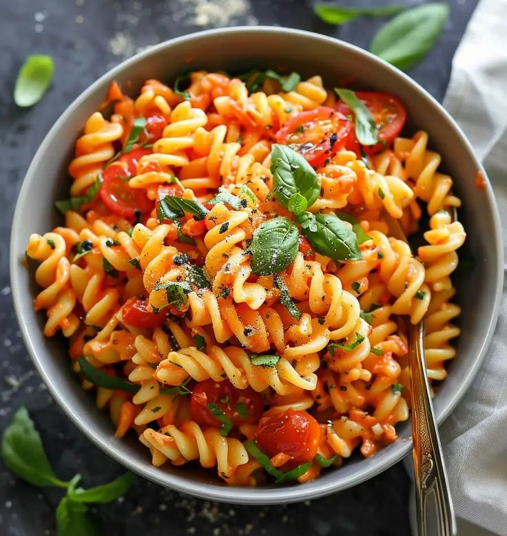
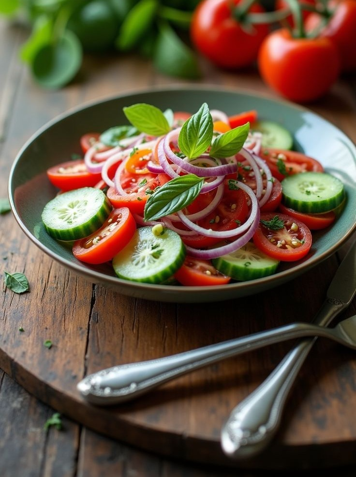

Tomato
Fruit / Vegetable
Tomato
A juicy, vibrant fruit (yes, it's a fruit!) packed with flavour and nutrients. Tomatoes are a staple in many cuisines and add colour, taste and nutrition to your meals.
🌿 Nutritional Information
(Approximate values per 100 g)
🔥18Calories
💪0.9 gProtein
🌾3.9 gCarbohydrates
💧0.2 gFat
🌿1.2 gFibre
⭐14 mgVitamin C
🧊 Storage Tips
- Keep at room temperature (if unripe).
- Store in the fridge to keep it fresh longer.
- Use within a week for the best taste and quality.
✅ Advantages
- Rich in vitamin C, A and potassium.
- Contains powerful antioxidants like lycopene.
- Supports heart health.
- May help boost immunity.
⚠️ Things to consider
- May trigger acid reflux in some people.
- Can cause allergies in rare cases.
- Excessive intake may lead to stomach discomfort.
🍴 Recipes Using This Ingredient
Here are some delicious recipes that include tomato:



